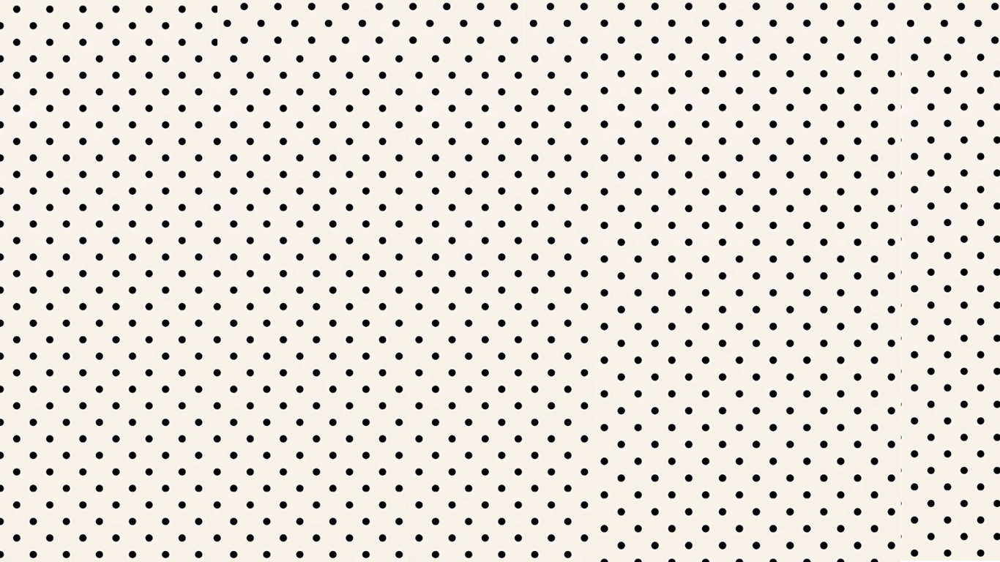
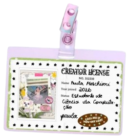

Explore as dicas

SWIT
Support Women In Tech
"For women that build the future of technology"
This website was created to orientate and give tips for women in tech.
Quem criou o SWIT

Curso: Ciência da Computação – PUC Minas
Esse site foi criado com o objetivo de ser um ponto de apoio e de engajamento pessoal de mulheres na área da tecnologia que é, muitas vezes, um espaço pouco acolhedor e pouco representativo para mulheres.